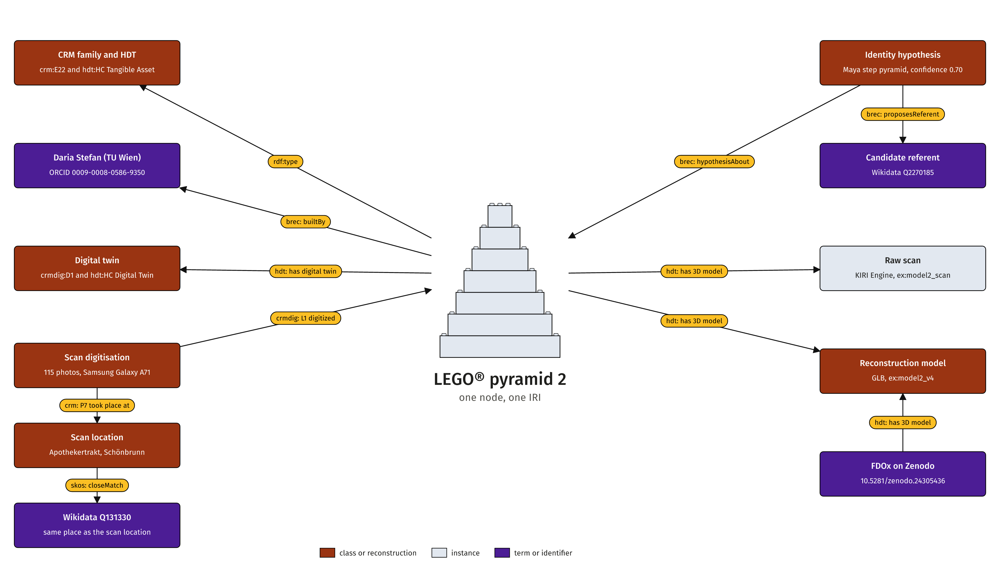
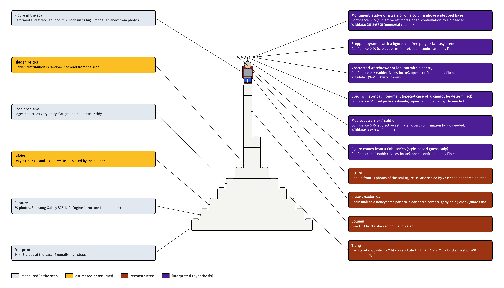
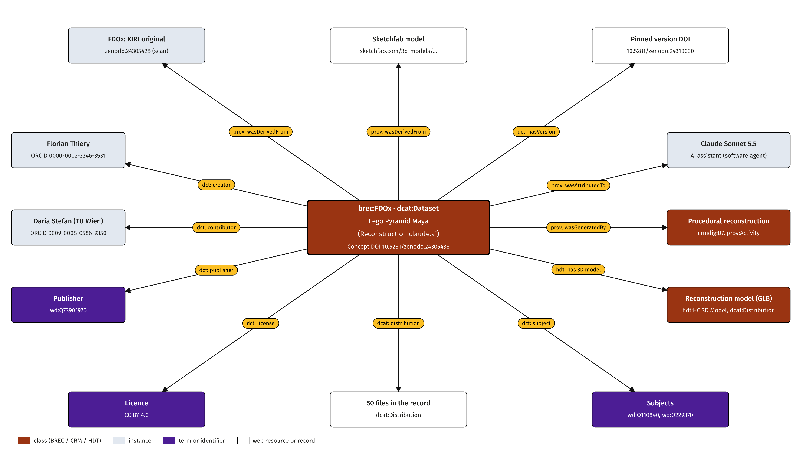
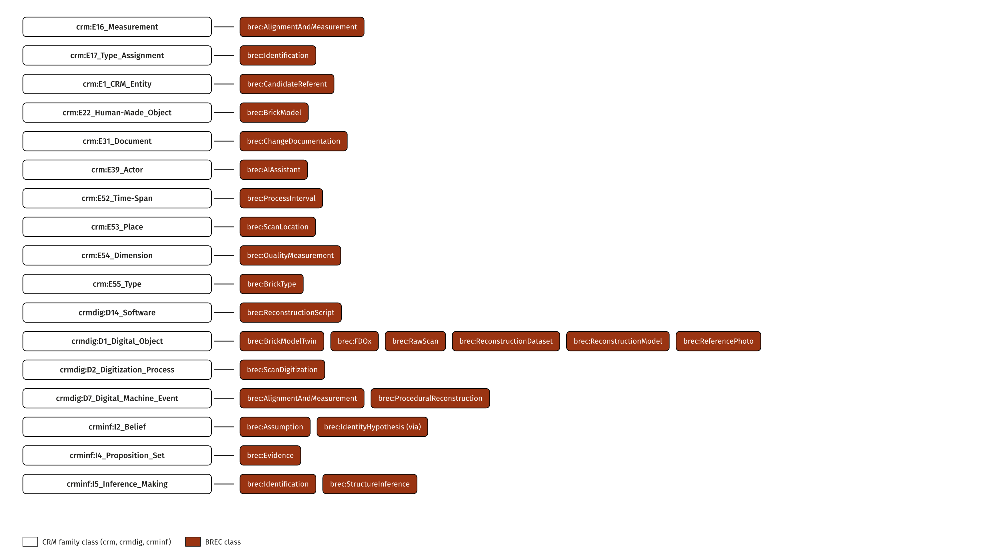

Five stages: the physical pyramid, the SfM scan, the brick reconstruction, the interpretation and the anchoring. Photo counts and confidences are read from the graph; the scan is drawn as noisy points, the reconstruction as bricks (schematic). Source: ontology/lrec.ttl and the notes of the repository; Research Squirrel Engineers at LEIZA. PNG · SVG
The three modules of the data model sit under the CRM family and reuse W3C vocabularies; the knowledge graph built from them is linked to the Linked Open Data cloud. Source: ontology/lrec.ttl and the notes of the repository; Research Squirrel Engineers at LEIZA. PNG · SVG

F3One pyramid as a node and what it is linked to
Pyramid 2. Every link is a statement in the graph; the dashed box marks a Wikidata item that has not been chosen yet (data/wikidata_mapping.ttl). Source: ontology/lrec.ttl and the notes of the repository; Research Squirrel Engineers at LEIZA. PNG · SVG
Shown for pyramid 2. Pyramid 1 is analogous (FDOx concept DOIs 10.5281/zenodo.24305240 for the scan and 10.5281/zenodo.24305343 for the reconstruction). Noted inside the classes without a node of their own: DCAT-AP, CodeMeta, SKOS, Wikidata (closeMatch), OWL-Time (P4); every class is also a prov:Entity, prov:Activity or prov:Agent (subclass relation, not drawn). Source: ontology/lrec.ttl and the notes of the repository; Research Squirrel Engineers at LEIZA. PNG · SVG
F5LREC class diagram
Hollow-triangle arrows are rdfs:subClassOf; the parent classes are listed per class so that no lines cross. Amber text marks attributes (datatype properties); the solid arrow is an object property. Source: ontology/lrec.ttl and the notes of the repository; Research Squirrel Engineers at LEIZA. PNG · SVG
Confidence is a subjective estimate by the AI assistant (0 to 1), not a measurement; hypotheses overlap and do not sum to 1. Wikidata items are picked by hand (data/wikidata_mapping.ttl). Source: ontology/lrec.ttl and the notes of the repository; Research Squirrel Engineers at LEIZA. PNG · SVG

F7Pyramid 1: measured, estimated, reconstructed and interpreted
Schematic front view; widths follow the studs of the reconstruction. Numbers in the statements are read from the change documentation and the graph; the figure on the column is drawn schematically (own drawing). Source: ontology/lrec.ttl and the notes of the repository; Research Squirrel Engineers at LEIZA. PNG · SVG
F8Pyramid 2: measured, estimated, reconstructed and interpreted
Schematic front view; stair-arm reach and corner blocks follow the reconstruction (v2 to v4). The builder confirmed the Maya step pyramid on 2026-11-17; El Castillo is not confirmed. Source: ontology/lrec.ttl and the notes of the repository; Research Squirrel Engineers at LEIZA. PNG · SVG

F9One FDOx and what it is linked to
The reconstruction record of pyramid 2. Every link is a statement in the merged graph (bundle TTL, pins and lrec.ttl). Source: ontology/lrec.ttl and the notes of the repository; Research Squirrel Engineers at LEIZA. PNG · SVG
F10Inputs, the four steps of main.py, outputs
Step names are read from main.py; counts from the repository files. Source: ontology/lrec.ttl and the notes of the repository; Research Squirrel Engineers at LEIZA. PNG · SVG

F11Own classes by their nearest CRM-family anchor
A class with two anchors stands in both groups; (via) marks an anchor reached through another own class. Source: ontology/lrec.ttl and the notes of the repository; Research Squirrel Engineers at LEIZA. PNG · SVG
F12Crosswalk: classes against vocabularies
Direct rdfs:subClassOf parents of every LREC class, one column per vocabulary; orange cells are the CRM family anchors. Source: ontology/lrec.ttl and the notes of the repository; Research Squirrel Engineers at LEIZA. PNG · SVG